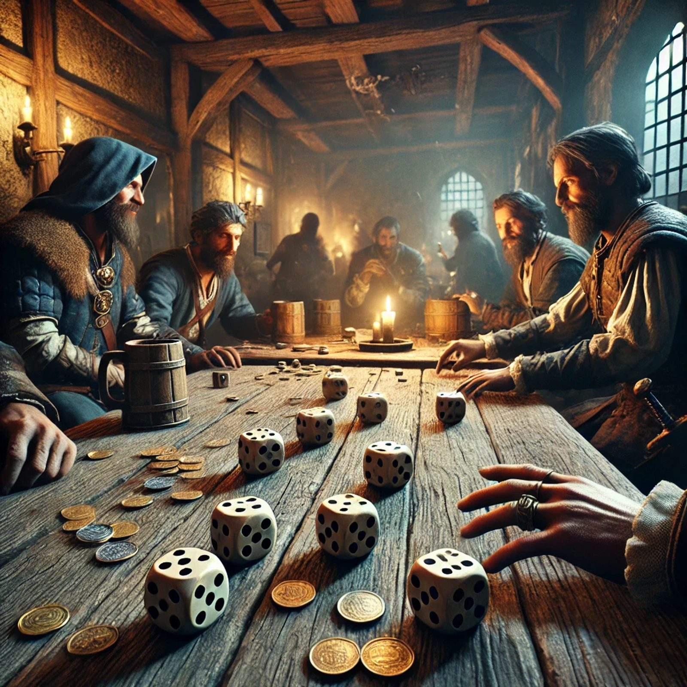
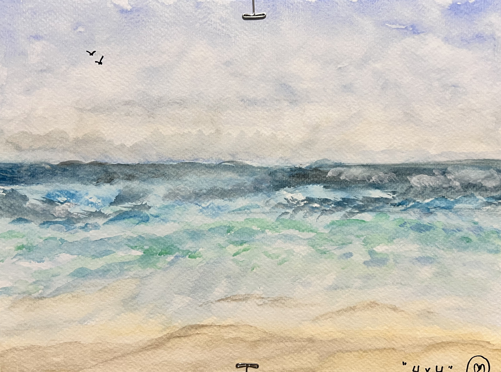

Featured Work & Creations
A curated collection of my digital and creative projects, showcasing a blend of complex logic, immersive storytelling, and visual artistry both inside and outside the IDE.
"Ghosts in the Silo"

- The Overview: A deep, atmospheric book project that explores intricate narrative structures and world-building.
- A multi-layered creative writing project focused on immersive storytelling and rich character development. Working on this piece requires extensive narrative planning, structural organization, and a deep focus on building a cohesive, atmospheric world that captivates the audience from the first page.
3D Farkle Dice Game (In Progress)

- The Overview: A 3D digital recreation of the classic dice game featured in Kingdom Come: Deliverance.
- A high-logic web game prototype featuring a 3D interface where dice roll dynamically from a floating cup. Built with the authentic rules of the game, the application currently handles complex real-time scoring mechanics, turn-based rolling, and "bust" logic. Future development is focused on expanding the state management to support local two-player functionality and an adaptive CPU opponent.
Travel Sketchbook & Watercolor Paintings

- The Overview: A collection of 7 completed physical watercolor and sketch pieces documenting past travels, with an 8th currently in progress.
- A lifelong multimedia project capturing architectural and landscape snapshots from travels around the world. Functioning as a curated digital gallery, this project showcases artistic composition and visual design skills across physical sketch and watercolor mediums, translating real-world global inspirations into a permanent digital archive.